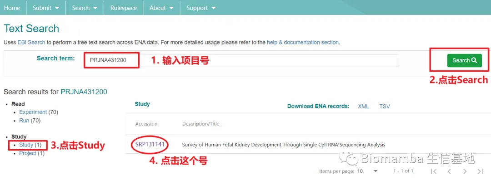
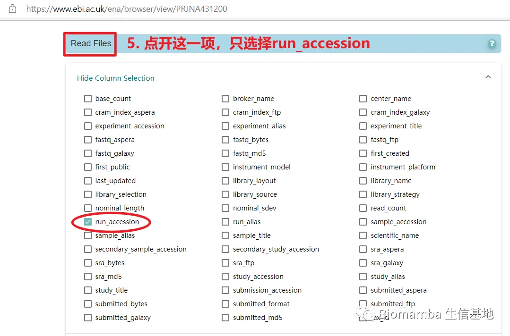
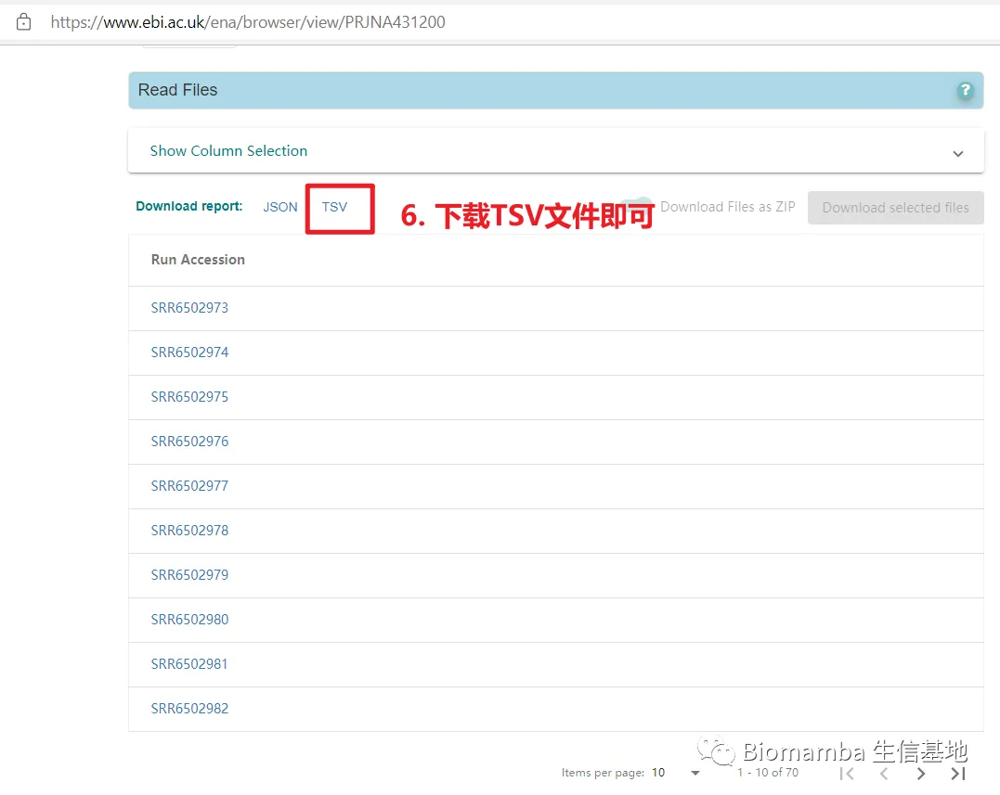

有奖提问,这个smart-Seq2数据实战的比对率为何如此低？
原文：https://mp.weixin.qq.com/s?__biz=MzAwMzIzOTk5OQ==&mid=2247488441&idx=1&sn=dac4efc4a8901a4abb133f9e5c80831e&chksm=9b3f6ae9ac48e3fff5a7112a0127726441ccb9dc2c3369d4a0fe98a2120df991954ff0567732#rd 合集：答读者问
背景
GSE109488 数据集链接：
https://www.ncbi.nlm.nih.gov/geo/query/acc.cgi?acc=GSE109488
这个数据集是胎儿肾脏的单细胞测序样本，可能本身胎儿肾脏细胞数很少，所以本研究采用的测序方法是smart-seq2 。遗憾的是，作者并没有把实际每个样本的counts数据集上传到GEO数据库，仅仅是上传了TPM的表达矩阵 ，为了满足客户的需求，保证数据分析顺利进行，我们打算从fastq数据开始把上游分析走一遍。
但实际上，网上针对smart-seq2数据的上游分析流程很少，B站生信技能树健明老师分享过一个系统的流程，shell脚本处理RNA-seq数据上游分析全部代码在：
https://github.com/jmzeng1314/scRNA_smart_seq2/blob/master/shell.txt
这里我们系统性地对smart-seq2上游分析流程做了一个总结，但这个数据集的比对率过低（其他的测试数据并没有出现这种情况，初步考虑是这个数据集的问题），我们也把所有的代码与环境放在这里，能解释原因的悬赏100￥，能找到DeBug方式的悬赏200￥，欢迎大家在后台把发现的原因和deBUG的方式告诉我们，先到先得~
分析教程
安装conda
假如你有一台新的服务器/一个新的服务器账号，你需要首先完成基础的配置，也就是conda的安装。跟着流程走吧~ 这一部分的教程可以查看链接：https://mp.weixin.qq.com/s/M3uAJf4vYzFnMcSsrKkBDQ
## 下载miniconda
wget -c https://mirrors.bfsu.edu.cn/anaconda/miniconda/Miniconda3-latest-Linux-x86_64.sh
## 运行并将其加入到环境变量
bash Miniconda3-latest-Linux-x86_64.sh
source ~/.bashrc
## 查看帮助文档
conda --help
## 查看当前镜像，初次查看一般只有defaults
conda config --show channels
## 添加北外镜像
conda config --add channels https://mirrors.bfsu.edu.cn/anaconda/cloud/bioconda/
conda config --add channels https://mirrors.bfsu.edu.cn/anaconda/cloud/conda-forge/
conda config --add channels https://mirrors.bfsu.edu.cn/anaconda/pkgs/free/
conda config --add channels https://mirrors.bfsu.edu.cn/anaconda/pkgs/main/
conda config --set show_channel_urls yes
## 再次查看当前的镜像源
conda config --show channels
创建一个名为rnaseq的小环境
# 创建名为rnaseq小环境
conda create -n rnaseq
# 激活环境
conda activate rnaseq
# 安装sra-tools, sra-tools包含prefetch和fastq-dump
conda install -y sra-tools
# 查看sra-tools是否安装成功, 出现帮助文档即安装成功
prefetch --help
fastq-dump --help
# 批量安装上游分析软件
conda install -y fastp fastqc trim-galore multiqc star bowtie2 hisat2 bwa samtools subread salmon axel
准备数据
## 我首先在家目录下创建了kidney文件夹，kidney文件夹下又创建了fetus_gse109488文件夹及fetus_gse109488的子文件夹1.fastq_raw
mkdir kidney/fetus_gse109488
cd kidney/fetus_gse109488
mkdir 1.fastq_raw
cd 1.fastq_raw
# 准备数据
# GSE109488数据集链接：https://www.ncbi.nlm.nih.gov/geo/query/acc.cgi
# 数据集链接页面Relations下有一个Bioproject = PRJNA431200
# 打开EBI链接：https://www.ebi.ac.uk/ena/browser/text-search?query= 搜索PRJNA431200
# 点击project，Read Files --- Show Column Selection --- 选择run_accession，fastq_md5，sra_ftp，study_accession，fastq_ftp这几个选项 --- 点击TSV下载文本文档filereport_read_run_PRJNA431200_tsv
# 将此文档上传到服务器kidney/fetus_gse109488文件夹下
# 查看文档并找到fastq文件ftp链接所在列（即第四列）
head -1 ../filereport_read_run_PRJNA* |tr '\t' '\n' |cat -n
# 1 study_accession
# 2 run_accession
# 3 fastq_md5
# 4 fastq_ftp
# 5 sra_ftp
使用axel下载数据
# 创建ftp链接文件
cat ../filereport_read_run_PRJNA* |awk -F '\t' 'NR>1 {print $4}' |tr ';' '\n' |grep '_' >fq.url
# 这里我们只以一个数据（双端测序，两个fastq文件）进行展示
cat ../filereport_read_run_PRJNA* |awk -F '\t' 'NR>1 {print $4}' |tr ';' '\n' |grep '_' | head -2 >fq_test.url
cat fq_test.url
# ftp.sra.ebi.ac.uk/vol1/fastq/SRR650/003/SRR6502973/SRR6502973_1.fastq.gz
# ftp.sra.ebi.ac.uk/vol1/fastq/SRR650/003/SRR6502973/SRR6502973_2.fastq.gz
# 创建axel_download.sh文件
vim axel_download.sh # 接下来会让你编辑内容
### 按大写C进入编辑页面,先输入三个井号，接下来输入：
cat fq_test.url |while read id
do
axel -n 30 ${id} # 这里线程数需要自己根据实际情况设定，我这里设置的是30
done
### 末尾也是三个井号
然后ESC键切换到普通模式，Shift键 + 冒号再按下w + q,即可保存并退出
cat axel_download.sh # 查看一下
# ###
# cat fq_test.url | while read id
# do
# axel -n 30 ${id}
# done
# ###
# nohup + & 进行fastq文件的下载（整个下载过程会输出到axel_download.log文件中）
nohup sh axel_download.sh >axel_download.log &
# 查看下载进程
cat axel_download.log | tail -3
# md5码核对，查看数据完整性
## 先构建文档
cat ../filereport_read_run_PRJNA* | awk -F'\t' 'NR>1{print$3}' | tr ';' '\n' | head -2 >md51
cat ../filereport_read_run_PRJNA* | awk -F'\t' 'NR>1{print$4}' |tr ';' '\n' |awk -F'/' '{print$NF}' | head -2 >md52
paste -d' ' md51 md52 |grep '_' >md5.txt
## 核对md5码
nohup md5sum -c md5.txt >check &
## 查看核对结果，OK才能进行下一步
cat check
# SRR6502973_1.fastq.gz: OK
# SRR6502973_2.fastq.gz: OK
# [1]+ Done nohup md5sum -c md5.txt > check
比对
cd
cd ~/biosoft # 我先在家目录下创建了一个biosoft文件夹，用于存储公共软件
# 事先下载好参考基因组，文章中使用的参考基因组是hg19，所以这里跟原文保持一致。
# hg19参考基因组下载链接为：https://genome-idx.s3.amazonaws.com/hisat/hg19_genome.tar.gz），推荐网页提前下载好上传至服务器（更快！）
# wget -c https://genome-idx.s3.amazonaws.com/hisat/hg19_genome.tar.gz
tar -xzvf hg19_genome.tar.gz # 解压
cd ~/kidney/fetus_gse109488/1.fastq_raw
# 比对
hisat2 -p 10 -x /home/shpc_100419/biosoft/hg19/genome -1 SRR6502973_1.fastq.gz -2 SRR6502973_2.fastq.gz --new-summary -S SRR6502973.sam
# hisat2这一步很耗时，可以nohup + & 后台运行
# 这一步结束会输出log日志,内容显示整体的比对率，参考基因组没问题的话一般比对率都很高（＞90%）
# HISAT2 summary stats:
# Total pairs: 115615751
# Aligned concordantly or discordantly 0 time: 115085626 (99.54%)
# Aligned concordantly 1 time: 152586 (0.13%)
# Aligned concordantly >1 times: 313867 (0.27%)
# Aligned discordantly 1 time: 63672 (0.06%)
# Total unpaired reads: 230171252
# Aligned 0 time: 206730387 (89.82%)
# Aligned 1 time: 18830106 (8.18%)
# Aligned >1 times: 4610759 (2.00%)
# Overall alignment rate: 10.60%
## 但是这个样本的比对率很低（10.60%）。
## 根据原文数据（文章链接：https://www.cell.com/cell-reports/fulltext/S2211-1247(18)31343-3?_returnURL=https%3A%2F%2Flinkinghub.elsevier.com%2Fretrieve%2Fpii%2FS2211124718313433%3Fshowall%3Dtrue#secsectitle0020 == 补充材料Supplementary infomation中的Table S1）
## 我看表格中作者所得到的70个样本的比对率也是参差不齐（1-78%）, 所以就放心做后面的啦！
sam转bam + 定量
## 首先进行sam文件转bam文件
# samtools sort -O bam -@ -5 -o 输出文件名 输入文件名
# samtools sort -O bam -@ 5 -o SRR6502973.bam SRR6502973.sam
# 运行时我这边出现以下报错：
# samtools: error while loading shared libraries: libcrypto.so.1.0.0: cannot open shared object file: No such file or directory
# 解决方法 == 链接在：https://www.jianshu.com/p/093522c89aef
1. 找到libcrypto.so.1.1.1
我的是在：~/miniconda3/envs/rnaseq/lib/libcrypto.so.1.1
2. 进到这个文件夹
cd ~/miniconda3/envs/rnaseq/lib/
3. 建立软连接（类似win的快捷方式）
ln -s libcrypto.so.1.1 libcrypto.so.1.0.0
cd ~/kidney/fetus_gse109488/1.fastq_raw
# 再次运行samtools
samtools sort -O bam -@ 5 -o SRR6502973.bam SRR6502973.sam
## gtf文件下载（我是在网站https://www.gencodegenes.org/human/，点击release history下载然后上传到服务器，hg19对应的gtf文件是GRch37(Release 19 (GRCh37.p13))!!! ：下载链接 == https://ftp.ebi.ac.uk/pub/databases/gencode/Gencode_human/release_19/gencode.v19.annotation.gtf.gz）
# wget -c https://ftp.ebi.ac.uk/pub/databases/gencode/Gencode_human/release_19/gencode.v19.annotation.gtf.gz (慢！)
# 将数据上传到/home/shpc_100419/biosoft文件夹中
# 解压
cd /home/shpc_100419/biosoft/
gunzip gencode.v19.annotation.gtf.gz
# 转录组定量featureCount(属于subread包)
# featureCounts --help # 查看是否成功安装
cd /home/shpc_100419/kidney/fetus_gse109488/1.fastq_raw/
gtf=/home/shpc_100419/biosoft/gencode.v19.annotation.gtf
featureCounts -T 10 -p -t exon -g gene_name -a $gtf -o all_counts.txt SRR6502973.bam 1>featureCounts.log 2>&1
cat featureCounts.log
//========================== featureCounts setting ===========================\\
|| ||
|| Input files : 1 BAM file ||
|| o SRR6502973.bam ||
|| ||
|| Output file : all_counts.txt ||
|| Summary : all_counts.txt.summary ||
|| Annotation : gencode.v19.annotation.gtf (GTF) ||
|| Dir for temp files : ./ ||
|| ||
|| Threads : 10 ||
|| Level : meta-feature level ||
|| Paired-end : yes ||
|| Multimapping reads : not counted ||
|| Multi-overlapping reads : not counted ||
|| Min overlapping bases : 1 ||
|| ||
|| Chimeric reads : counted ||
|| Both ends mapped : not required ||
|| ||
\\============================================================================//
//================================= Running ==================================\\
|| ||
|| Load annotation file gencode.v19.annotation.gtf ... ||
|| Features : 1196293 ||
|| Meta-features : 55765 ||
|| Chromosomes/contigs : 25 ||
|| ||
|| Process BAM file SRR6502973.bam... ||
|| Paired-end reads are included. ||
|| Total alignments : 123739948 ||
|| Successfully assigned alignments : 12038032 (9.7%) ||
|| Running time : 1.72 minutes ||
|| ||
|| Write the final count table. ||
|| Write the read assignment summary. ||
|| ||
|| Summary of counting results can be found in file "all_counts.txt.summary" ||
|| ||
\\============================================================================//
# 注意：Successfully assigned alignments只有9.7%,按照原文的hg19参考基因组和相对应的gtf注释文件进行的分析
# 这个问题在biomamba群里问了，目前还没有人解答。有个姐妹在分析RNAseq数据时也遇到了相同的问题。
# 有答案的同学请积极踊跃发言！！
别走，还有彩蛋
# 遇到很多样本的数据该怎么办？？
# 如何批量运行呢？如下！！
# 首先你可以提前下载好数据的SRR号，就以上述演示的GSE109488数据集为例（因为是70个样本，这里只选择3个样本展示哈~）
# 数据集SRR号的下载详细流程如图所示（你可以把下载好的这个文件上传到服务器）。这里我们只选择其中三个样本进行代码的展示（所以这里我们自己构建SRR编号文件就可以）
# conda activate rnaseq
cd ~/kidney/fetus_gse109488/1.fastq_raw
cat >download_file
SRR6502973
SRR6502974
SRR6502975 # 回车
# CTRL + C
# axel下载文件就不进行演示了，选择这三个SRR编号的双端测序文件ftp链接即可(注意修改fq.url的)
# axel下载完成后注意md5sum核检，都是OK才能进行下一步
# hisat2比对
cat >hisat.sh
cat download_file | while read id
do
hisat2 -p 10 -x /home/data/vip9t32/rnaseq/hg19/genome -1 ${id}_1.fastq.gz -2 ${id}_2.fastq.gz --new-summary -S ${id}.sam
done # 回车
# CTRL + C
nohup sh hisat.sh >hisat.log &
# sam转bam
cat >samtool.sh
cat download_file | while read id
do
samtools sort -O bam -@ 5 -o ${id}.bam ${id}.sam
done
nohup sh samtool.sh >samtool.log &
# featureCounts定量
gtf=/home/shpc_100419/biosoft/gencode.v19.annotation.gtf
featureCounts -T 10 -p -t exon -g gene_name -a $gtf -o all_counts.txt *.bam 1>featureCounts.log 2>&1



查看文档日志
##
cat hisat.log
HISAT2 summary stats:
Total pairs: 115615751
Aligned concordantly or discordantly 0 time: 115085626 (99.54%)
Aligned concordantly 1 time: 152586 (0.13%)
Aligned concordantly >1 times: 313867 (0.27%)
Aligned discordantly 1 time: 63672 (0.06%)
Total unpaired reads: 230171252
Aligned 0 time: 206730387 (89.82%)
Aligned 1 time: 18830106 (8.18%)
Aligned >1 times: 4610759 (2.00%)
Overall alignment rate: 10.60%
HISAT2 summary stats:
Total pairs: 118987360
Aligned concordantly or discordantly 0 time: 118231468 (99.36%)
Aligned concordantly 1 time: 186196 (0.16%)
Aligned concordantly >1 times: 514223 (0.43%)
Aligned discordantly 1 time: 55473 (0.05%)
Total unpaired reads: 236462936
Aligned 0 time: 206463845 (87.31%)
Aligned 1 time: 21021674 (8.89%)
Aligned >1 times: 8977417 (3.80%)
Overall alignment rate: 13.24%
HISAT2 summary stats:
Total pairs: 108404416
Aligned concordantly or discordantly 0 time: 107796793 (99.44%)
Aligned concordantly 1 time: 131492 (0.12%)
Aligned concordantly >1 times: 336089 (0.31%)
Aligned discordantly 1 time: 140042 (0.13%)
Total unpaired reads: 215593586
Aligned 0 time: 195887190 (90.86%)
Aligned 1 time: 17069478 (7.92%)
Aligned >1 times: 2636918 (1.22%)
Overall alignment rate: 9.65%
##
cat samtool.log
[bam_sort_core] merging from 95 files and 5 in-memory blocks...
[bam_sort_core] merging from 110 files and 5 in-memory blocks...
[bam_sort_core] merging from 90 files and 5 in-memory blocks...
##
cat featureCounts.log
========== _____ _ _ ____ _____ ______ _____
===== / ____| | | | _ \| __ \| ____| /\ | __ \
===== | (___ | | | | |_) | |__) | |__ / \ | | | |
==== \___ \| | | | _ <| _ /| __| / /\ \ | | | |
==== ____) | |__| | |_) | | \ \| |____ / ____ \| |__| |
========== |_____/ \____/|____/|_| \_\______/_/ \_\_____/
v2.0.1
//========================== featureCounts setting ===========================\\
|| ||
|| Input files : 3 BAM files ||
|| o SRR6502973.bam ||
|| o SRR6502974.bam ||
|| o SRR6502975.bam ||
|| ||
|| Output file : all_counts.txt ||
|| Summary : all_counts.txt.summary ||
|| Annotation : gencode.v19.annotation.gtf (GTF) ||
|| Dir for temp files : ./ ||
|| ||
|| Threads : 10 ||
|| Level : meta-feature level ||
|| Paired-end : yes ||
|| Multimapping reads : not counted ||
|| Multi-overlapping reads : not counted ||
|| Min overlapping bases : 1 ||
|| ||
|| Chimeric reads : counted ||
|| Both ends mapped : not required ||
|| ||
\\============================================================================//
//================================= Running ==================================\\
|| ||
|| Load annotation file gencode.v19.annotation.gtf ... ||
|| Features : 1196293 ||
|| Meta-features : 55765 ||
|| Chromosomes/contigs : 25 ||
|| ||
|| Process BAM file SRR6502973.bam... ||
|| Paired-end reads are included. ||
|| Total alignments : 123739948 ||
|| Successfully assigned alignments : 12038032 (9.7%) ||
|| Running time : 1.09 minutes ||
|| ||
|| Process BAM file SRR6502974.bam... ||
|| Paired-end reads are included. ||
|| Total alignments : 143138234 ||
|| Successfully assigned alignments : 12750467 (8.9%) ||
|| Running time : 1.97 minutes ||
|| ||
|| Process BAM file SRR6502975.bam... ||
|| Paired-end reads are included. ||
|| Total alignments : 115713479 ||
|| Successfully assigned alignments : 9243940 (8.0%) ||
|| Running time : 0.96 minutes ||
|| ||
|| Write the final count table. ||
|| Write the read assignment summary. ||
|| ||
|| Summary of counting results can be found in file "all_counts.txt.summary" ||
|| ||
\\============================================================================//

如何联系我们
 公众号后台中消息更新不及时，超过48h后便不允许回复读者消息，这里给大家留一下领取资料、咨询服务器的微信号 ，方便大家随时交流、提建议（由助理接待）。此外呼声一直很高的交流群也建好了，欢迎大家入群讨论：你们要的微信、交流群，来了！
大家可以阅读完这几篇之后添加笑一笑也就算了有关提高"Biomamba 生信基地"运行效率事宜
公众号后台中消息更新不及时，超过48h后便不允许回复读者消息，这里给大家留一下领取资料、咨询服务器的微信号 ，方便大家随时交流、提建议（由助理接待）。此外呼声一直很高的交流群也建好了，欢迎大家入群讨论：你们要的微信、交流群，来了！
大家可以阅读完这几篇之后添加笑一笑也就算了有关提高"Biomamba 生信基地"运行效率事宜